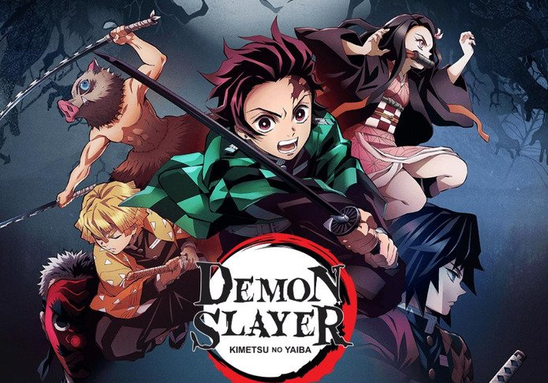
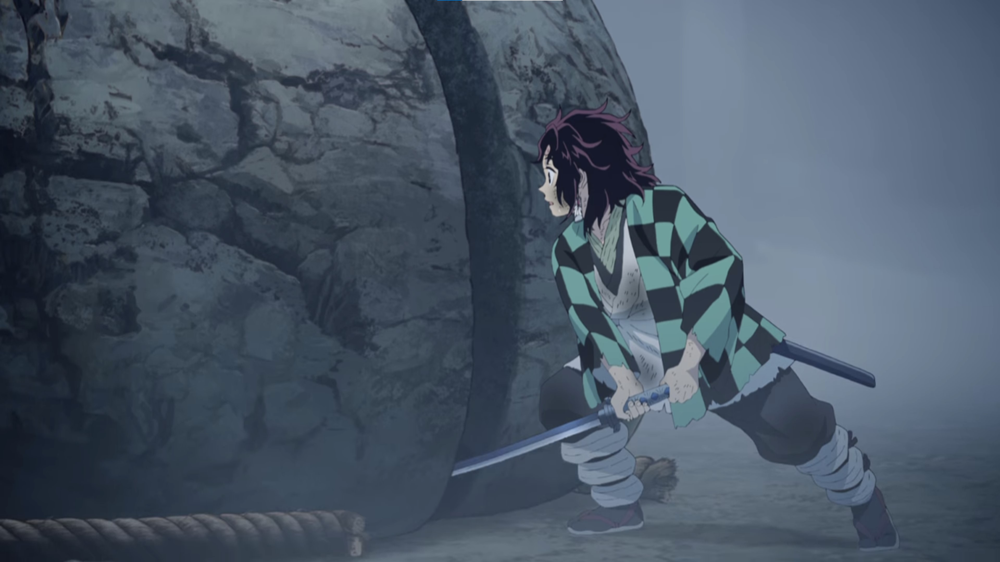
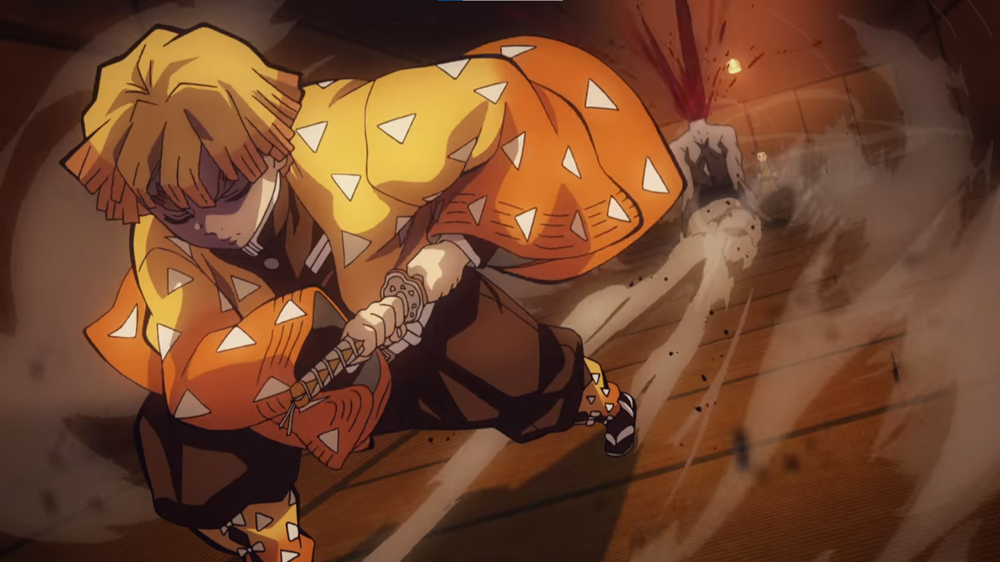
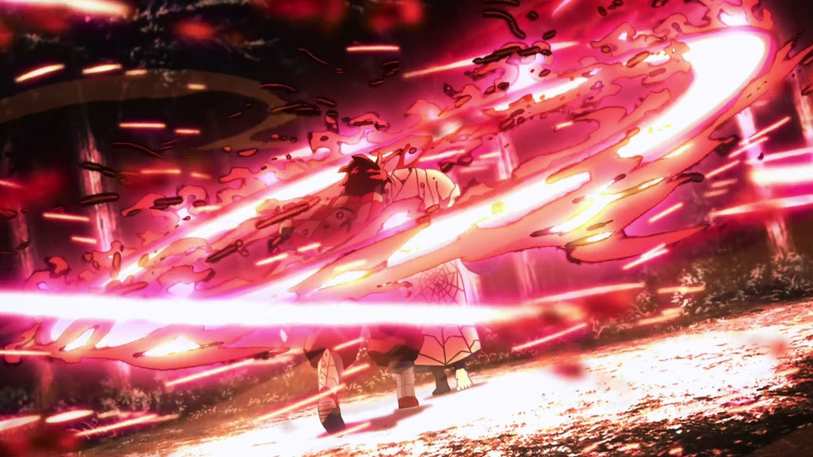

Demon Slayer
Demon Slayer is on my top 3 list because the characters are super fun and lovable, the artwork is truly stunning, and the story and small details create a super unique and hard to replicate show. In the show you follow each character that has noticable flaws, however you watch each of them grow and work together. There are scenes in this show where the combination of the story, art and music make my hairs stand up. Each scene is perfectly edited and drawn to flow with the story. This show is a great watch because while it is a cartoon there is violence and real themes found throughout it.
Top 3 Scenes...
Tanjiro's Rock
In this scene Tanjiro finally is able to cut the enormous rock in half. He needs to do this in order to fully complete and mater his training to join the demon slayer corps. This scene is a pivital scene whre the characters new skills are more refined and he is one step closer.
Zenitsu's First Attack
In this scene the vieweer sees Zenitsu use his power for the first tine to slay a demon. However, her is completely asleep for the whole encounter and has no memory of fighting. This scene is amazing because usally Zenitsu is a coward and filled with nerves. However he is a badass after this scene, only in his sleep.
Tanjiro vs Rui
In this scene Tanjiro summons the power that has been passed down through his family. He uses this to fight off the 12th strongest demon named Rui. Nezuko also finds out that she has a special ability called exploding blood. In this scene the art and music flow so well